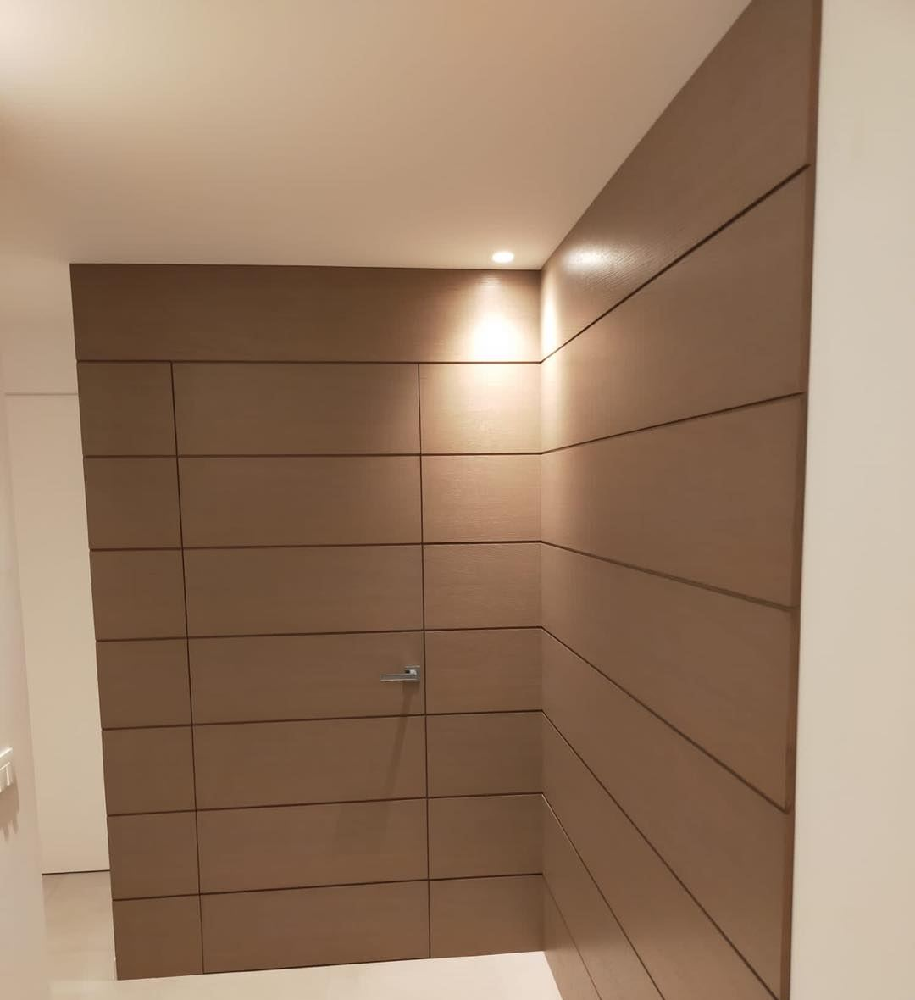
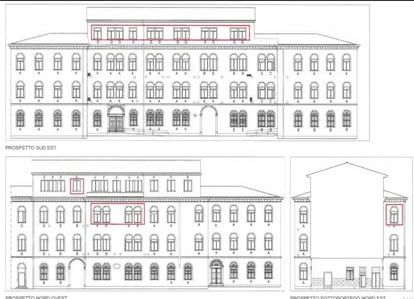

Finestre e porte in legno, su misura.
Dal 1970 progettiamo, costruiamo e montiamo finestre in legno e legno-alluminio, porte interne e portoni blindati. A Bibano di Godega, in provincia di Treviso.
- Dal 1970Produciamo serramenti esterni e interni
- Legno e legno-alluminioModerni, classici o con vincoli da rispettare
- Posa e assistenzaInstallati, certificati e seguiti nel tempo
- Bibano di Godega (TV)Via Tariei 5
Cosa costruiamo
Ogni pezzo nasce sulle misure della casa che lo ospita, con materiali aggiornati e soluzioni in regola con le normative di oggi.
-
Finestre
In legno o in legno-alluminio, fatte sulle misure del tuo vano. Moderne, classiche o con i vincoli che l'edificio richiede: troviamo la soluzione per ogni caso.
Com'è fatta una finestra -
Porte interne
Una porta non è solo un oggetto di design: deve funzionare bene ogni giorno. Moderne o classiche, a battente, in vetro o a filo muro.
-
Portoni blindati
Il portone blindato è prima di tutto sicurezza. Se è anche bello e sposa lo stile della casa, ancora meglio: lo disegniamo insieme al resto dei serramenti.
-
Sistemi oscuranti
Per decidere quanta luce far entrare e proteggere la casa, coordinati con le finestre. Fanno parte di tutto quello che riguarda la sicurezza della tua casa.
-
Su misura
Boiserie, pareti rivestite, porte nascoste nei pannelli, vetrate e decori. Ogni casa ha le sue caratteristiche e chi la vive ha le sue esigenze: seguiamo entrambe.
Com'è fatta una finestra
Il telaio
È la parte fissa, ancorata al muro. Regge l'anta e la chiude sul vano: una posa fatta bene parte da qui.
L'anta
La parte che si apre. La disegniamo sulla casa: profili moderni, classici o come chiedono i vincoli dell'edificio.
Il vetro
Occupa quasi tutta la finestra. Si sceglie in base a isolamento, sicurezza e rumore della zona.
Guarnizioni e ferramenta
Tengono fuori aria e acqua e fanno lavorare l'anta sempre allo stesso modo, apertura dopo apertura.
La maniglia
L'unico pezzo che tocchi tutti i giorni. Anche in ottone, come in alcuni nostri lavori.
Fuori alluminio, dentro legno
Con il legno-alluminio il rivestimento esterno protegge dalle intemperie e chiede poca manutenzione. Dentro casa resta il calore del legno.
Lavori fatti
Alcuni dei lavori che abbiamo realizzato e montato. Tocca una foto per vederla più grande.
-
Vetrate a inglesina di una villa, al tramonto
-
Boiserie in legno con porta a filo, nascosta tra i pannelli
-
Porta a due ante con intarsio in legno e ottone
-
Portefinestre in legno scuro con profili in ottone
-
Maniglioni in ottone zigrinato su anta vetrata
-
Porta con pannello decorativo traforato
-
Finestra appena montata, con vista sui tetti
-
Porta in vetro a due ante con maniglioni in acciaio
-
Parete attrezzata con pannelli e luce integrata
-
Porta bianca a pannelli
-
Posa di una grande vetrata con il sollevatore
Come lavoriamo
Partiamo dai vostri sogni per dar vita alle vostre idee.

-
Ascolto
Ci racconti la casa, come la vivi e che budget hai. Ascoltare è la prima cosa che facciamo, perché la soluzione giusta parte da lì.
-
Progetto
Il nostro gruppo di progettazione mette insieme aspettative, specifiche tecniche e budget e ti propone una soluzione su misura.
-
Produzione e posa
Realizziamo i serramenti e li montiamo noi, fino alla certificazione dell'installazione.
-
Assistenza
Dopo la posa restiamo a disposizione: se serve un intervento, chiami e ci pensiamo noi.
Chiedi un preventivo
Dicci cosa ti serve e dove: ti richiamiamo per capire il lavoro e fissare un sopralluogo.
- Telefono
- 0438 782042
- Dove siamo
- Via Tariei 5, 31010 Bibano di Godega di Sant'Urbano (TV)
Indicazioni stradali - Orari
- [DA CONFERMARE]